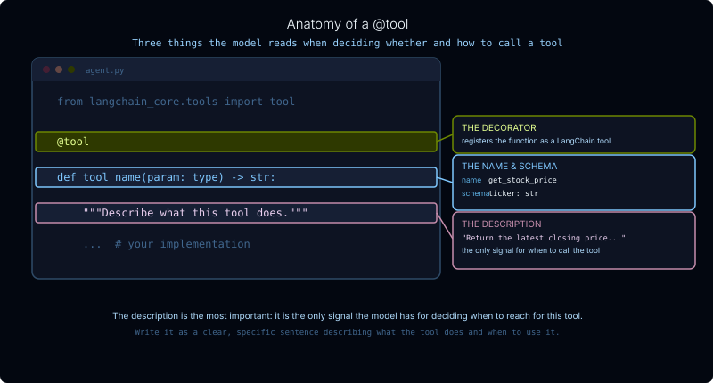

🔗 For translation, open lesson in new tab and use Chrome translate
Tools are functions you give an agent so it can act: look things up, run queries, call APIs, write files. The agent decides when to call them and what to pass; you define what they do.
Every deep agent ships with a built-in set of tools, loaded automatically by the SDK. You already saw these appear in the LangSmith trace in the previous lesson, as write_todos and Filesystem Tools sections inside the system message:
| Tool(s) | What it does |
|---|---|
write_todos |
Manage a running to-do list for multi-step planning |
ls, read_file, write_file, edit_file |
Read and write files in the agent's working directory |
glob, grep |
Search files by name pattern or content |
execute |
Run shell commands (requires a sandbox backend) |
task |
Delegate work to a sub-agent with an isolated context |
These are always present. The tools parameter on create_deep_agent is additive: whatever you pass is merged with the built-in suite, not substituted for it.
agent = create_deep_agent(
model=model,
tools=[my_tool_a, my_tool_b], # merged with the built-ins above
)
Step through the sequence to see how each part fits together:
When tool calls have no dependency on each other, the Tool Node runs them simultaneously rather than one at a time. Some harness profiles explicitly instruct the model to do this.
Example: an agent with search_web and search_docs tools receives a question that needs both. Both fire in the same turn; the LLM sees both results together in the next call.
Try it in Lab 3: ask two unrelated questions in one message: "Which genres have the most tracks, and which employee has handled the most invoices?" Then watch the LangSmith trace to see whether the calls overlap.
@toolTools are part of the LangChain library. The @tool decorator from langchain_core.tools is the standard way to define one: write a regular Python function and the decorator turns it into something the model can call. LangChain also ships ready-made tools for common tasks (for example, TavilySearchResults for web search), so you don't have to write everything from scratch.
from langchain_core.tools import tool
@tool
def get_stock_price(ticker: str) -> str:
"""Return the latest closing price for a stock ticker symbol."""
... # your implementation

The description is the most important of the three. Write it as a clear, specific sentence: it is the only signal the model has for deciding when to reach for this tool versus another.
The return value should be a string (or anything JSON-serializable). It comes back to the model as the tool result and is visible in the conversation.
Human-in-the-Loop (HITL) is a pattern where agent execution pauses at a critical step and waits for a human to approve, modify, or cancel before continuing. It is important because agents can take irreversible actions: writing to a database, sending a message, deleting a file. HITL gives you a checkpoint before those actions happen.
Open python/m1/scratch_agent.py.
read_sql for SELECT queries and write_sql for write operations.write_sql uses Human-in-the-Loop: the agent proposes the SQL, execution pauses, and you approve or reject before anything is written to the database.The Chinook database is a standard SQLite music store sample with 11 tables covering artists, albums, tracks, customers, invoices, and employees. The file is already in the repo at python/m1/chinook.db.
Confirm langchain-community is available (it ships with the workshop dependencies):
uv run python -c "from langchain_community.utilities import SQLDatabase; print('ok')"
Replace the contents of scratch_agent.py with the following:
import sys
from pathlib import Path
from langchain_community.utilities import SQLDatabase
from langchain_core.tools import tool
from langgraph.checkpoint.memory import MemorySaver
from langgraph.types import interrupt, Command
from deepagents import create_deep_agent
sys.path.insert(0, str(Path(__file__).resolve().parent.parent))
from models import model
DB_PATH = Path(__file__).parent / "chinook.db"
db = SQLDatabase.from_uri(f"sqlite:///{DB_PATH}")
A checkpointer saves the agent's state at each step so execution can pause and later resume from exactly the same point. MemorySaver is the simplest checkpointer; it keeps that state in memory. It is required for HITL: without it, the graph has no way to pause mid-run and pick up again after a human decision.
Two tools means the agent needs to know which to reach for:
SYSTEM_PROMPT = """You are a SQL analyst with access to the Chinook music store database.
Rules:
- Use read_sql for all SELECT queries.
- Use write_sql for INSERT, UPDATE, DELETE, and ALTER operations.
- Think step-by-step. Read first, then write.
- If a tool returns an error, revise the SQL and try again.
- Show your SQL in your final answer.
"""
read_sql and write_sqlread_sql executes and returns immediately. write_sql calls interrupt() before touching the database. When the graph hits interrupt(), execution pauses and the pending value surfaces to the caller. The script reads it, prompts you for approval, then resumes with your response via Command(resume=...).
@tool
def read_sql(query: str) -> str:
"""Run a read-only SELECT query against the Chinook music store database."""
try:
return db.run(query)
except Exception as e:
return f"Error: {e}"
@tool
def write_sql(query: str) -> str:
"""Execute a write operation (INSERT, UPDATE, DELETE, ALTER) against the Chinook database.
Requires human approval before executing."""
approval = interrupt({"question": f"Approve this write?\n\n{query}"})
if str(approval).strip().lower() not in ("yes", "y"):
return "Write cancelled."
try:
return db.run(query)
except Exception as e:
return f"Error: {e}"
Pass both tools and the checkpointer. The while loop handles the approval prompt and resumes the graph with your response:
checkpointer = MemorySaver()
agent = create_deep_agent(
model=model,
tools=[read_sql, write_sql],
system_prompt=SYSTEM_PROMPT,
checkpointer=checkpointer,
)
config = {"configurable": {"thread_id": "lab3"}}
result = agent.invoke(
{"messages": [{"role": "user", "content": "What genres are in the database? Then add a new genre called 'Synthwave'."}]},
config=config,
)
while result.get("__interrupt__"):
pending = result["__interrupt__"][0].value
print(f"\nApproval required:\n{pending['question']}")
approval = input("\nApprove? (yes/no): ").strip()
result = agent.invoke(Command(resume=approval), config=config)
print(result["messages"][-1].content)
cd ~/Documents/Github/lca-deepagents/python && uv run ./m1/scratch_agent.py
# Code Output
**Top 5 Best-Selling Artists by Total Revenue:**
1. **Iron Maiden** - $138.60
2. **U2** - $105.93
3. **Metallica** - $90.09
4. **Led Zeppelin** - $86.13
5. **Lost** - $81.59
The SQL query joins the Artist, Album, Track, and InvoiceLine tables to
calculate total revenue (UnitPrice × Quantity) per artist, then ranks by
descending total.
The agent reads the genres first, then proposes an INSERT. The terminal pauses and prints the SQL. Type yes to approve or no to cancel, then note the result: the agent's final message will confirm whether the genre was added.
read_sql to inspect the genres table, then calls write_sql with an INSERT. At that point, the graph hits interrupt() and suspends: no write has happened yet. Your script surfaces the pending SQL, waits for input, and passes your response back via Command(resume=...). The graph resumes inside write_sql, checks the response, and either commits the write or cancels. Open the run in LangSmith to see the pause and resume as distinct steps in the trace.
The same @tool pattern works for anything Python can do. Describe what you want to your coding agent and let it write the implementation, then drop it into create_deep_agent(tools=[...]).
Three ideas to get started:
@tool that calls requests.get(...) and returns the result is all it takes.Documentation:
- Deep Agents overview
- Customization (Deep Agents)
- deepagents README (GitHub)
- text-to-sql-agent example (GitHub)